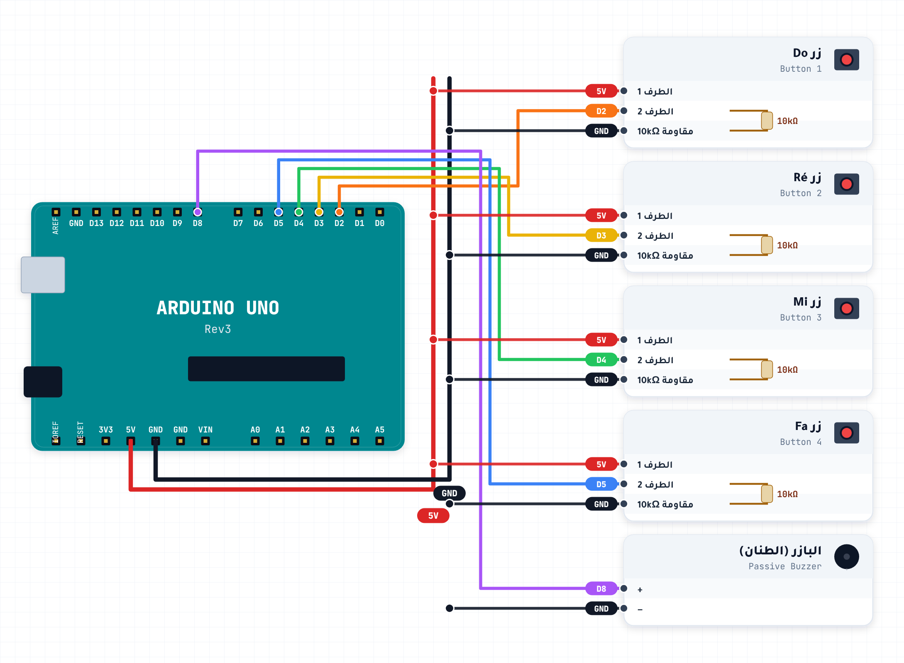
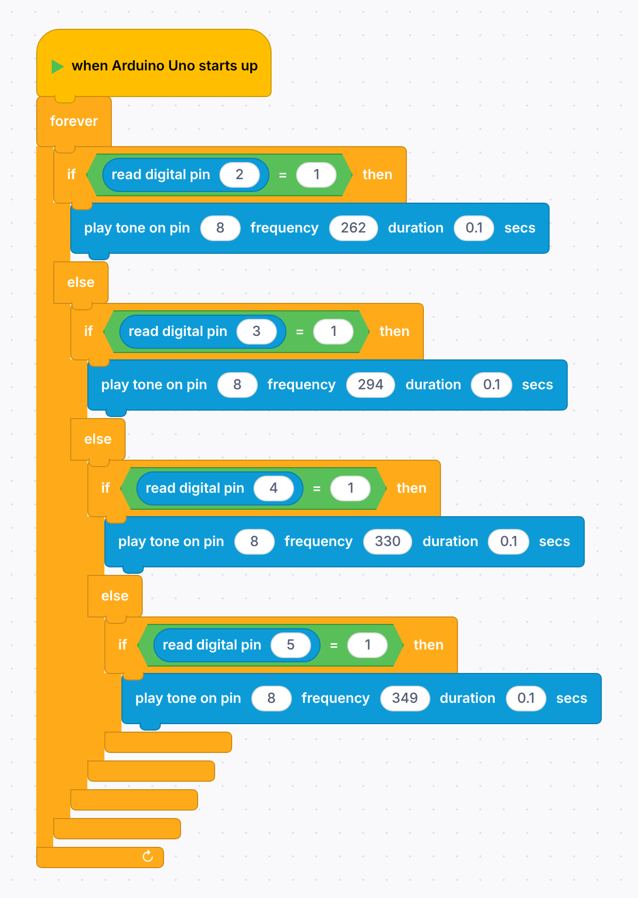

▶فيديو الشرح
أربعة أزرار تعزف Do Ré Mi Fa عبر البازر — آلة موسيقية مصغرة.
1المكونات
ARDUINO UNOboardزر DoButton 1زر RéButton 2زر MiButton 3زر FaButton 4البازر (الطنان)Passive Buzzerأسلاك توصيلJumper Wiresلوحة تجاربBreadboard
2مخطط التوصيل

اضغط على المخطط لتكبيره · نسخة SVG عالية الدقة
| القطعة | الطرف | يوصل إلى |
|---|---|---|
| زر Do | الطرف 1 | 5V |
| زر Do | الطرف 2 | D2 |
| زر Do | مقاومة 10kΩ | GND |
| زر Do | مقاومة 10kΩ | بين «الطرف 2» و «مقاومة 10kΩ» |
| زر Ré | الطرف 1 | 5V |
| زر Ré | الطرف 2 | D3 |
| زر Ré | مقاومة 10kΩ | GND |
| زر Ré | مقاومة 10kΩ | بين «الطرف 2» و «مقاومة 10kΩ» |
| زر Mi | الطرف 1 | 5V |
| زر Mi | الطرف 2 | D4 |
| زر Mi | مقاومة 10kΩ | GND |
| زر Mi | مقاومة 10kΩ | بين «الطرف 2» و «مقاومة 10kΩ» |
| زر Fa | الطرف 1 | 5V |
| زر Fa | الطرف 2 | D5 |
| زر Fa | مقاومة 10kΩ | GND |
| زر Fa | مقاومة 10kΩ | بين «الطرف 2» و «مقاومة 10kΩ» |
| البازر (الطنان) | + | D8 |
| البازر (الطنان) | − | GND |
3الكود
لا يحتاج هذا المشروع إلى أي مكتبة إضافية.
/* المستوى المتوسط — المشروع 7: البيانو الإلكتروني وتوليد النغمات كتاب: 38 مشروع في شهر — لؤي النصري (@robotlouay) التوصيل: 4 أزرار: طرف كل زر → 5V ، والطرف الآخر → Pin 2 / 3 / 4 / 5 + مقاومة 10kΩ من كل منفذ (2..5) إلى GND (Pull-down) Buzzer غير نشط: (+) → Pin 8 ، (−) → GND */ const int BUZZER_PIN = 8; const int keys[4] = {2, 3, 4, 5}; const int notes[4] = {262, 294, 330, 349}; // Do Ré Mi Fa (C4 D4 E4 F4) void setup() { for (int i = 0; i < 4; i++) pinMode(keys[i], INPUT); pinMode(BUZZER_PIN, OUTPUT); } void loop() { int pressed = -1; for (int i = 0; i < 4; i++) { if (digitalRead(keys[i]) == HIGH) { pressed = i; break; } } if (pressed >= 0) tone(BUZZER_PIN, notes[pressed]); // يعزف ما دام الزر مضغوطاً else noTone(BUZZER_PIN); delay(10); }
🧩 mBlock 5: اختر الجهاز Arduino Uno ثم وضع Upload، وأنشئ المتغيرات المستعملة من فئة Variables.
نفس منطق كود Arduino IDE مكتوباً بالبلوكات.
نفس منطق كود Arduino IDE مكتوباً بالبلوكات.


4كيف يعمل؟
- كل زر متصل بمنفذ مع مقاومة سحب للأسفل
- الأردوينو يفحص الأزرار باستمرار
- زر مضغوط → tone() بتردد النوتة
- لا زر → noTone()
⚠ قبل توصيل الكهرباء: راجع كل سلك مع الجدول أعلاه، وتأكد من عدم وجود تماس بين 5V و GND. اختر اللوحة والمنفذ الصحيحين من قائمة Tools في Arduino IDE.